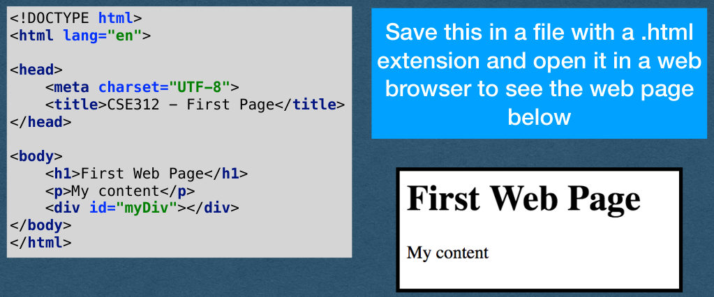
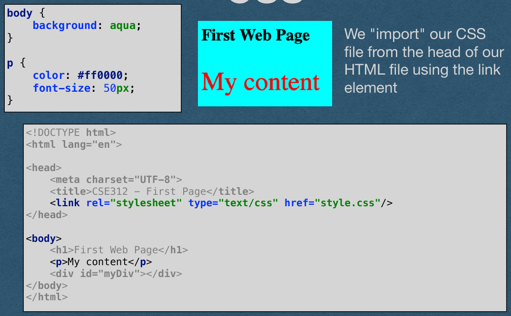
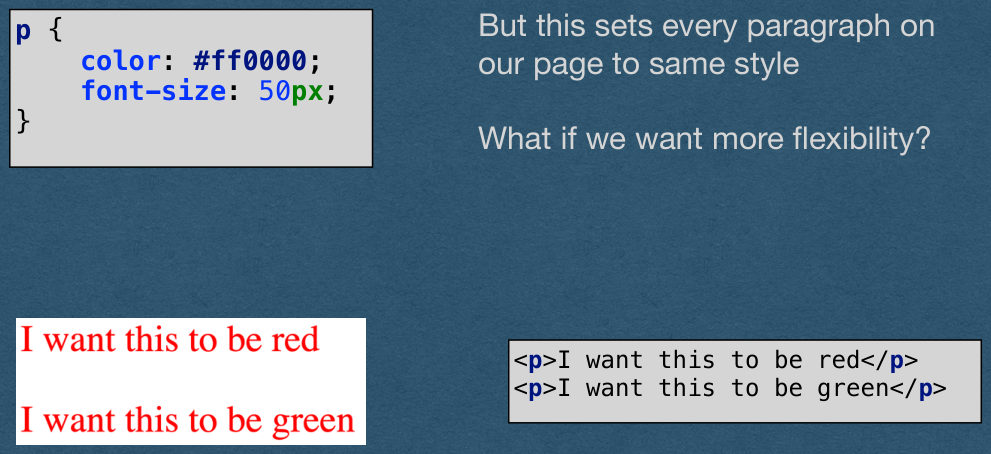
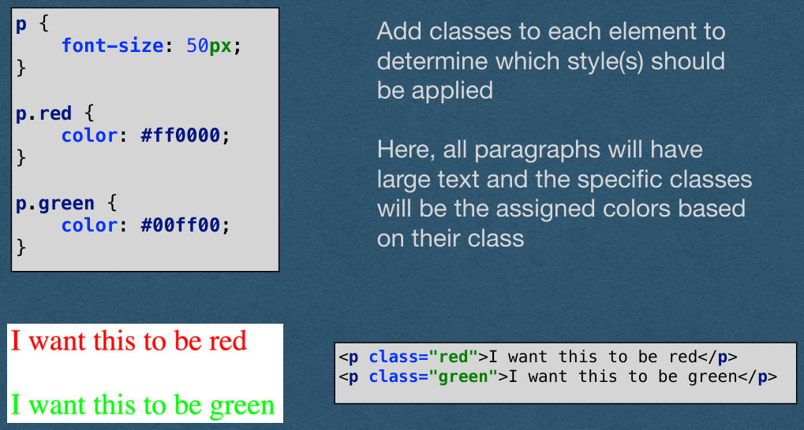
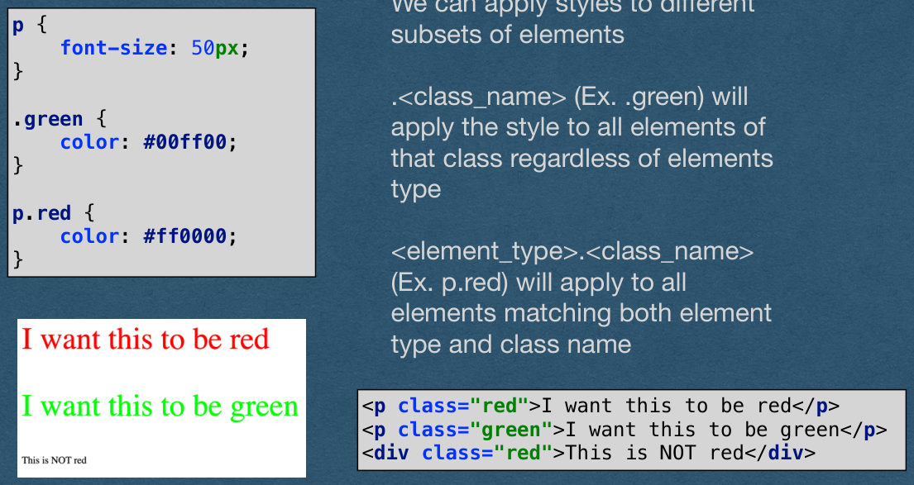
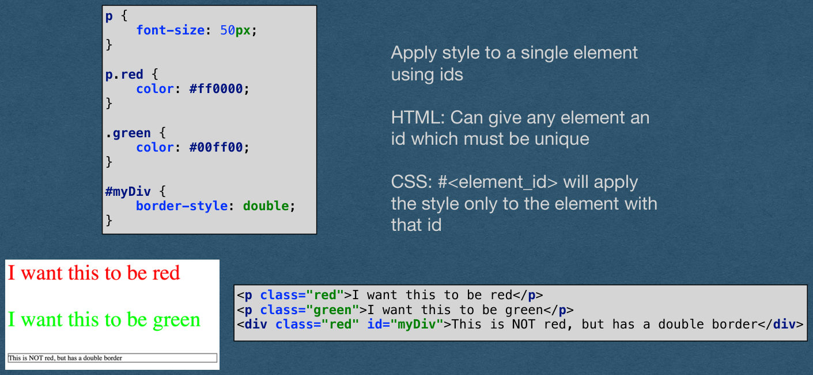
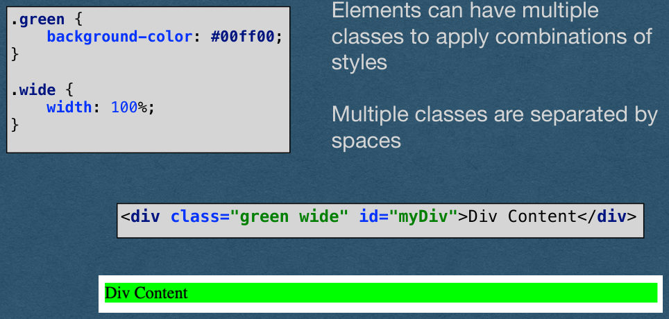
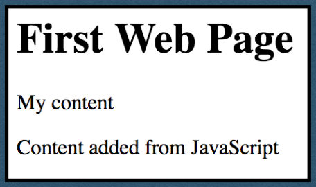

Front End Development - HTML/CSS + JavaScript
CSE312 — Web Development
Front End Development
Roadmap for Today
- HTML
- The foundation of any web page
- CSS
- Adding style to the page
- JavaScript
- Adding dynamic functionality to the page
HTML
HTML
Hyper Text Markup Language
Hyper Text: Text that can contain links to other resources
Markup Language: Special markers add information to the text
that is not visible to users. In HTML we use tags to tell the
browser how to display the textHTML is not a programming language
HTML
<!DOCTYPE html>
<html lang="en">Save this in a file with a .html
extension and open it in a web
<head>
<meta charset="UTF-8">
<title>CSE312 - First Page</title>
</head>browser to see the web page
below
<body>
<h1>First Web Page</h1>
<p>My content</p>
<div id="myDiv"></div>
</body>
</html>
HTML - Elements
HTML uses angle brackets to
define elements<!DOCTYPE html>
<html lang="en">Each element has an open tag
<h1> and close tag </h1><head>
<meta charset="UTF-8">
<title>CSE312 - First Page</title>
</head>Everything between the open and
close tag is the content of that
element<body>
<h1>First Web Page</h1>
<p>My content</p>
<div id="myDiv"></div>
</body>
</html>Elements can be nested
-The h1, p, and div elements on
this page are nested inside the
body elementHTML - Elements
head - Content that does not
appear on the page<!DOCTYPE html>
<html lang="en">title - The text that appears on the
browser tab<head>
<meta charset="UTF-8">
<title>CSE312 - First Page</title>
</head>body - Content that appears on
the page<body>
<h1>First Web Page</h1>
<p>My content</p>
<div id="myDiv"></div>
</body>
</html>h1 - Header 1 (can use h1 - h6
where h1 is the largest header)p - Paragraph of text
div - A division. Typically used as
a featureless containerHTML - Self-Closing Elements
<img src="slides.png"/><br/>Some elements are self-closing
<hr/>The open and close tags are
contained in one tagimg - image
br - Line break
hr - horizontal rule (line)
HTML - Attributes
<!DOCTYPE html>
<html lang="en">Elements can contain attributes
which are defined in the open tag
of the element<head>
<meta charset="UTF-8">
<title>CSE312 - First Page</title>
</head>These Attributes are key-value
pairs<body>
<h1>First Web Page</h1>
<p>My content</p>
<div id="myDiv"></div>
</body>
</html>We have an empty division with a
property named id with a value of
"myDiv"HTML - Comments
<!DOCTYPE html>
<html lang="en"><head>
<meta charset="UTF-8">
<title>CSE312 - First Page</title>
</head>HTML only supports block
comments<div id="myDiv"></div>
</body>
</html>HTML - Unicode
Insert any unicode character with
the syntax &#<unicode_value>;<!DOCTYPE html>
<html lang="en">♜ == ♜
<head>
<meta charset="UTF-8">
<title>CSE312 - First Page</title>
</head>Some common characters have
names<body>
<h1>♜ Web Page</h1>
<div id="myDiv"></div>
</body>
</html>→ == →
Extra white space is ignored in
HTML. Add extra spaces with
(non-breaking space)HTML
That's HTML.
We'll use many more elements and attributes as they come up
You are expected to pick up HTML quickly and understand new
elements (Links, lists, tables, etc.) by studying documentationI recommend W3 Schools to explore other elements/attributes
available to youhttps://www.w3schools.com/html/default.asp
CSS
CSS
Used to add style to HTML elements
Keep CSS in an external file to separate structure
from style (Good practice)HTML should only be concerned with raw content
and basic organization of the pageCSS is concerned with how that content is styled
CSS
Note: You will not be graded on the quality of your
CSS in this class (This is not an art class)We'll cover the absolute basics so you are aware of
CSS and how it functionsYou are encouraged to explore CSS further if you
want to make your sites visually appealingCSS
CSS allows us to edit the look of
each elementbody {
background: aqua;
}Here, we change the background
color to "aqua" which is a named
colorp {
color: #ff0000;
font-size: 50px;
}We change the text of each
paragraph using the RGB value
of red and setting the font size to
50 pixelsMany more properties that can be
setCSS
body {
background: aqua;
}We "import" our CSS
file from the head of our
HTML file using the link
elementp {
color: #ff0000;
font-size: 50px;
}<!DOCTYPE html>
<html lang="en"><head>
<meta charset="UTF-8">
<title>CSE312 - First Page</title>
<link rel="stylesheet" type="text/css" href="style.css"/>
</head><body>
<h1>First Web Page</h1>
<p>My content</p>
<div id="myDiv"></div>
</body>
</html>
CSS
But this sets every paragraph on
our page to same stylep {
color: #ff0000;
font-size: 50px;
}What if we want more flexibility?
<p>I want this to be red</p>
<p>I want this to be green</p>
CSS - Classes
p {
font-size: 50px;
}Add classes to each element to
determine which style(s) should
be appliedp.red {
color: #ff0000;
}Here, all paragraphs will have
large text and the specific classes
will be the assigned colors based
on their classp.green {
color: #00ff00;
}<p class="red">I want this to be red</p>
<p class="green">I want this to be green</p>
CSS
We can apply styles to different
subsets of elementsp {
font-size: 50px;
}.<class_name> (Ex. .green) will
apply the style to all elements of
that class regardless of elements
type.green {
color: #00ff00;
}p.red {
color: #ff0000;
}<element_type>.<class_name>
(Ex. p.red) will apply to all
elements matching both element
type and class name<p class="red">I want this to be red</p>
<p class="green">I want this to be green</p>
<div class="red">This is NOT red</div>
CSS
p {
font-size: 50px;
}Apply style to a single element
using idsp.red {
color: #ff0000;
}HTML: Can give any element an
id which must be unique.green {
color: #00ff00;
}CSS: #<element_id> will apply
the style only to the element with
that id#myDiv {
border-style: double;
}<p class="red">I want this to be red</p>
<p class="green">I want this to be green</p>
<div class="red" id="myDiv">This is NOT red, but has a double border</div>
CSS - Multiple Classes
Elements can have multiple
classes to apply combinations of
styles.green {
background-color: #00ff00;
}.wide {
width: 100%;
}Multiple classes are separated by
spaces<div class="green wide" id="myDiv">Div Content</div>
CSS
There are many more features of CSS that we won't cover
As with HTML, I recommend W3 Schools for more
https://www.w3schools.com/css/default.asp
JavaScript
JavaScript
We will not thoroughly cover JavaScript syntax
If you haven't used JavaScript before, you are expected to learn the
basic syntax and concepts on your own (or stop by office hours)Topics such as variables, conditionals, loops, functions, and data
structures won't be explicitly covered in lectureAs with HTML/CSS, I recommend W3 Schools for a good tutorial/
reference
https://www.w3schools.com/js/default.aspFront End JavaScript
We've seen the basic building blocks for web pages in HTML and CSS
This allows us to build what I call "poster sites" - The equivalent of
hanging a poster on the Internet for people to seeIn this course we want to make web apps that allow our users to interact
with our contentTo start this interaction, we need JavaScript (Specifically, ECMAScript)
Front End JavaScript
HTML and CSS are not programming languages (well.. technically)
JavaScript is a programming language
Javascript allows us to add code to our page
When a user visits your site their browser will:
1. Download your JavaScript code
2. Run your code on their machineWhat are the security implications of this?
Front End JavaScript - Security
There are restrictions to what JavaScript can do in the browser:
Cannot read/write files
Cannot access other tabs or windows
Cannot [directly] access data (ex. cookies, local storage) from other sitesVulnerabilities are still exposed/patched
With that, let's see our first script
Front End JavaScript
var myDiv = document.getElementById("myDiv");
myDiv.innerHTML = "Content added from JavaScript";
Here we call the document.getElementById method which returns
the element with the provided idThe element is an object with a key "innerHTML" whose value is
the content (between the open and close tags) of the elementWe'll save this code in a file named "script.js"
Front End JavaScript
var myDiv = document.getElementById("myDiv");
myDiv.innerHTML = "Content added from JavaScript";
<!DOCTYPE html>
<html lang="en">We "import" our javascript
code by adding a script
element at the bottom of the
body element with a src
(source) attribute containing
our JavaScript filename<head>
<meta charset="UTF-8">
<title>CSE312 - First Page</title>
</head><body>
<h1>First Web Page</h1>
<p>My content</p>
<div id="myDiv"></div>
<script src="script.js"></script>
</body>
</html>This runs our script once the
body is loadedFront End JavaScript
The script runs when the body loads and sets the content of
"myDiv" resulting in this page (CSS removed)
JavaScript - Events
What about JS that reacts to the user?
Let's explore browser events and write code that can react to them
See here for a list of events
-https://www.w3schools.com/js/js_events_examples.aspFront End JavaScript
<div class="green wide" id="myDiv" onmouseenter="makeBlue(this)" onmouseleave="makeGreen(this)"></div>function makeBlue(elem) {
elem.style.setProperty("color", "#000077")
}function makeGreen(elem) {
elem.style.setProperty("color", "#007700")
}We add a few more attributes to our div to run JavaScript functions on
the mouse enter and mouse leave eventsThe value of these attributes is any valid JavaScript
To keep our project organized, we'll call functions that are defined in a
separate fileFront End JavaScript
<div class="green wide" id="myDiv" onmouseenter="makeBlue(this)" onmouseleave="makeGreen(this)"></div>function makeBlue(elem) {
elem.style.setProperty("color", "#000077")
}function makeGreen(elem) {
elem.style.setProperty("color", "#007700")
}We pass the element itself as an argument to the functions
In the function, we change one of the style properties of the element
We can run any valid JavaScript here so what you can do is only
limited by what you can conceive and codeBrowser Console
- Open the browser console to run your own JavaScript on the pages you visit
- This is also where console.log outputs
- Helpful for seeing the output of your JavaScript
Browser Extensions
- Extensions allow additional JavaScript code to be injected into a website
- Useful when we want to modify a site without opening the browser console and typing commands after every page load
- Extensions automate this process
Browser Extensions
- Extension have some limitations
- Cannot access variables or functions from the page
- More specifically: Extensions and page source run in two different environments
- Extension can modify the DOM (HTML elements)